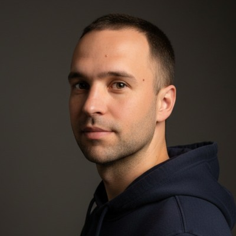

Serg Markovich
DevOps / Platform Engineer

Qualifikationsprofil
- Platform Engineering: Nachgewiesene Erfahrung in der Bereitstellung und dem Betrieb produktionsreifer Self-Hosted-Infrastruktur (Docker, Supabase, PostgreSQL) für medizinische Anwendungen.
- Infrastruktur-Optimierung: Expertise in der Migration von Cloud-Native-Services zu On-Premise/VPS-Lösungen unter Gewährleistung von Datenhoheit und Kostenreduktion.
- Security & Automation: Praktische Erfahrung in Linux-Systemadministration (systemd, Berechtigungen), Container-Sicherheit und automatisierten Deployment-Pipelines.
- Kontinuierliche Weiterbildung: Derzeit Vorbereitung auf Microsoft Certified: Azure Administrator Associate (AZ-104); engagiert in der Beherrschung von Kubernetes und modernen IaC-Stacks.
Technische Kompetenzen
| Cloud & Infrastruktur: | Microsoft Azure (AZ-104 in Vorbereitung), Hetzner Cloud (VPS-Management), Docker, Docker Compose, Linux (Ubuntu/Debian), Nginx, Traefik |
| CI/CD & Automatisierung: | GitHub Actions, Bash Scripting, Systemd Services, App Store Connect / Google Play Console Pipelines |
| Datenbank & Backend: | Supabase (Self-hosted & Cloud), PostgreSQL, Firebase (FCM), REST APIs |
| Monitoring & Tools: | Uptime Kuma, Grundkenntnisse Prometheus/Grafana, Obsidian (PKM), MkDocs (Documentation as Code) |
| Programmiersprachen: | Bash, SQL, YAML, Python (Grundkenntnisse) |
Technische Projekte & Berufserfahrung
Full-Cycle Medical Platform (GastroClinic)
Jan. 2025 – Okt. 2025
DevOps & Mobile Infrastructure Engineer
- Infrastruktur-Migration: Erfolgreiche Migration eines Produktions-Backends von Supabase Cloud zu einer selbst gehosteten Docker-Umgebung (16+ Microservices) auf Hetzner VPS zur Erfüllung gesetzlicher Anforderungen an Datenhoheit.
- Reliability Engineering: Diagnose und Behebung kritischer Ausfälle im Supabase Realtime Service zur Wiederherstellung der Live-Synchronisation von Patientendaten.
- Release Management: Orchestrierung des Build- und Release-Prozesses für iOS- und Android-Anwendungen, einschließlich Signierung, Zertifizierung und Veröffentlichung im App Store und Google Play.
- Integration: Entwicklung eines robusten Benachrichtigungssystems unter Einbindung von Firebase Cloud Messaging (FCM), OnePlus Push und transaktionalen SMTP-Diensten.
- Security: Härtung der Instanzsicherheit, Verwaltung von Firewall-Regeln und Standardisierung des Konfigurationsmanagements über Umgebungsvariablen.
Privacy-Focused Homelab Stack
2024 – Heute
Self-Hosted Infrastructure Engineer | Open Source
- Architektur: Konzeption und Wartung eines sicheren, datenschutzorientierten lokalen Cloud-Stacks auf Basis von Docker und systemd.
- AI Operations: Deployment lokaler LLM-Inferenz (Ollama) mit benutzerdefinierten systemd-Service-Wrappern für Ressourcenverwaltung und Hintergrundausführung.
- Networking: Konfiguration sicherer Remote-Zugriffe über OpenVPN und Reverse Proxies zur Gewährleistung verschlüsselter Verbindungen zu internen Services (Nextcloud, Notes).
- Automatisierung: Entwicklung maßgeschneiderter Bash-Skripte für automatisierte Backups, Service-Health-Checks und Container-Updates.
- Dokumentation: Pflege umfassender technischer Dokumentation (MkDocs) mit Setup-Anleitungen, Disaster Recovery und Architekturentscheidungen.
Web-Infrastruktur Hintergrund
IT-Unternehmer & Webmaster
2017 – 2025
- Verwaltung einer High-Volume-Web-Hosting-Infrastruktur mit einem Höchststand von über 700 parallelen CMS-Instanzen (WordPress, statische Seiten).
- Optimierung der Server-Performance (Apache/Nginx/MySQL) zur Bewältigung schwankender Traffic-Lasten bei gleichzeitiger Minimierung der Hosting-Kosten.
- Umsetzung einer umfassenden Konsolidierungsstrategie mit Reduktion der Infrastruktur auf ~250 aktive Assets.
Ausbildung & Zertifizierungen
| Zertifizierungen: | Microsoft Certified: Azure Administrator Associate (AZ-104) — In Vorbereitung (Frühjahr 2026) |
| Sprachkenntnisse: |
Deutsch: A2/B1 (Integrationskurs laufend, erwartet April 2026) Englisch: B2 (Professionelle Arbeitskompetenz) Russisch / Ukrainisch: Muttersprache |
| Studium: | Pädagogische Universität (Sozialpsychologie) — 2004–2009 |